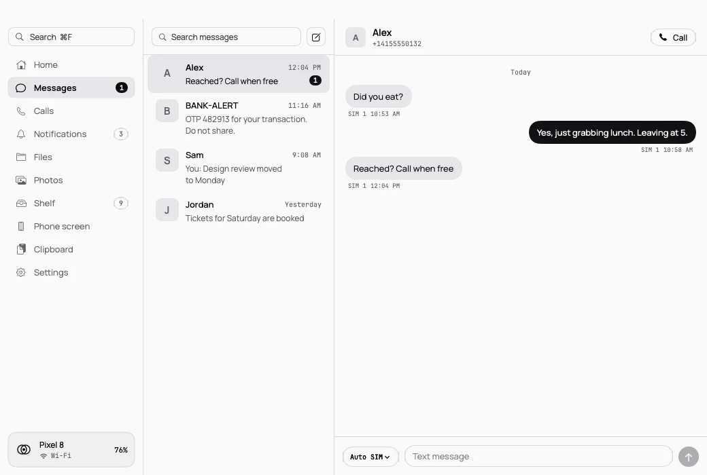

Text from your Mac.
Read and reply to SMS. One-time codes land on the clipboard, ready to paste.

Code 482913 copiedFrom BANK-ALERT
Texts, calls, clipboard, files and notifications. Linked directly over Bluetooth. No cloud. No account.
Your phone, from your Mac. One tiny link.
Read and reply to SMS. One-time codes land on the clipboard, ready to paste.

Drag a file across and it's there. Big ones jump to Wi-Fi on their own.
Copy text or a photo on one device and paste it on the other. Codes from Messages are on the clipboard before you look.
Phone notifications show up on the Mac. Reply right from the banner and keep typing.
Answer, decline or silence calls from the Mac, and read and send texts without picking up the phone.
Drag a file out of Finder and it lands in the phone's Downloads. Big ones jump to Wi-Fi automatically, up to ~110 MB/s.
A shared list for text, links, Wi-Fi networks and files, with folders and search. Kept offline, synced on reconnect.
Ring your Mac at full volume from the phone, even on mute. Press Found it to stop the sound.
Right-click › Insert from Phone › Take Photo. The phone's camera opens, and the shot drops straight into your document.
Join the phone's hotspot from the menu bar, mirror and control its screen, media controls and widgets.
The link is direct. Wi-Fi only speeds things up.
Every byte, on Bluetooth and on Wi-Fi.
Free, open source, no telemetry.
macOS 13 Ventura or later · Apple silicon & Intel
Android 8.0 or later · signed APK
609f5884cb833ca997667181767426b551f7e420bdebafcb7037f8ed01a4030a